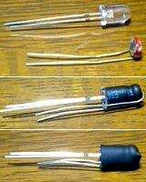
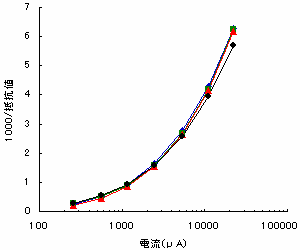

フォトカプラ（LED+Cds）の製作・マッチング
2007年11月23日 カテゴリー：実験等

Bumper crop studioのHEY VIBEを製作するには欠かせないLED+Cdsです。今回省スペース化を狙おうということで、普通とは違い縦型で作ってみました。
写真一番上がLEDとCdsです。LED+Cdsのフォトカプラは秋月電子の通販で1個200円みたいです。高輝度LEDとCdsバラバラに買うと1個45円になりました。たくさん作るならだいぶ得です。縦型にするためCdsは足を折り曲げています。
写真真ん中がとりあえず熱収縮チューブでつけてみたところです。私の場合この段階である程度値をそろえておきました。9V、1kΩの抵抗をLEDにつないでCdsが320Ωぐらいでした。
写真一番下がさらに熱収縮チューブをかぶせたものです。すると値がまた変わったりします。でも熱収縮チューブでくっつけてるだけなので、また分解して別の組み合わせで測定できます。光が結構漏れている（＝外からの光が中に入っている）んですが、エフェクターの内部はほぼ真っ暗だろうからよしとしました。
意外と値がそろわなくて、分解してはまた別の組み合わせで…の繰り返しでした。なんとか4つマッチングしましたが、完全に光が漏れないようにして作った方が良かったのかもしれません。せっかくなので抵抗をいろいろ変えて値を測定し、グラフにしてみました。

見づらいんですがそれだけそろってるってことでしょう。結果どうなるかはHEY VIBEを作ってみないとわかりません。
参考ページ：Takeda's HomePage